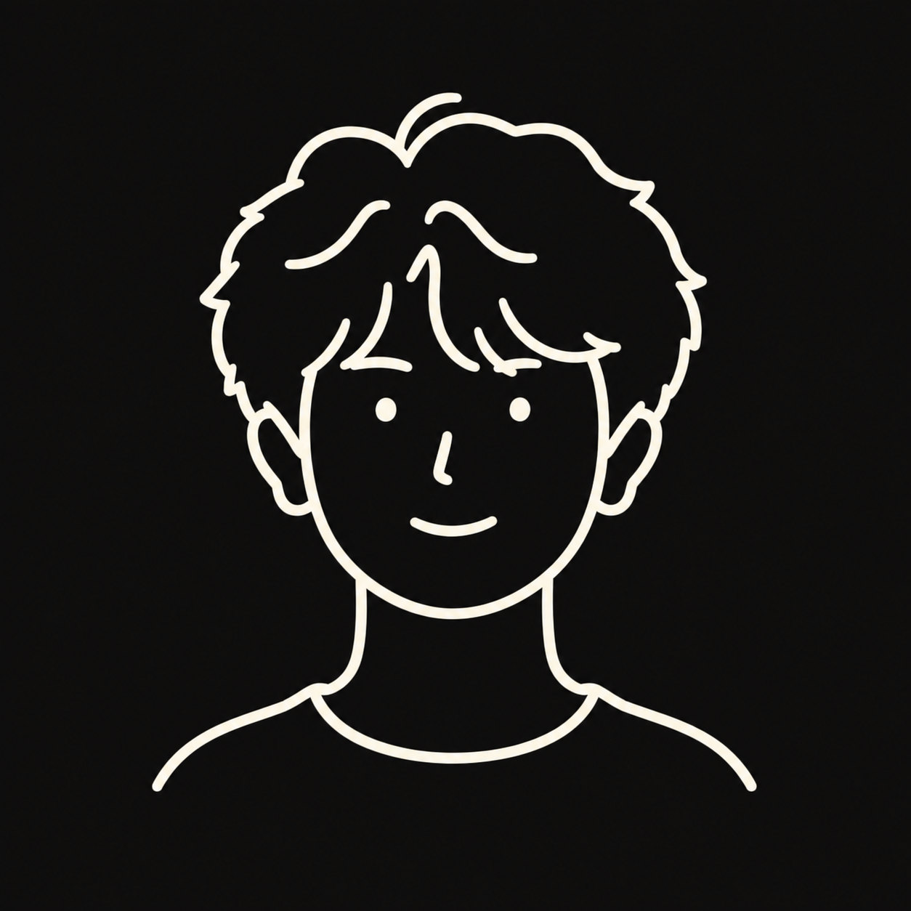
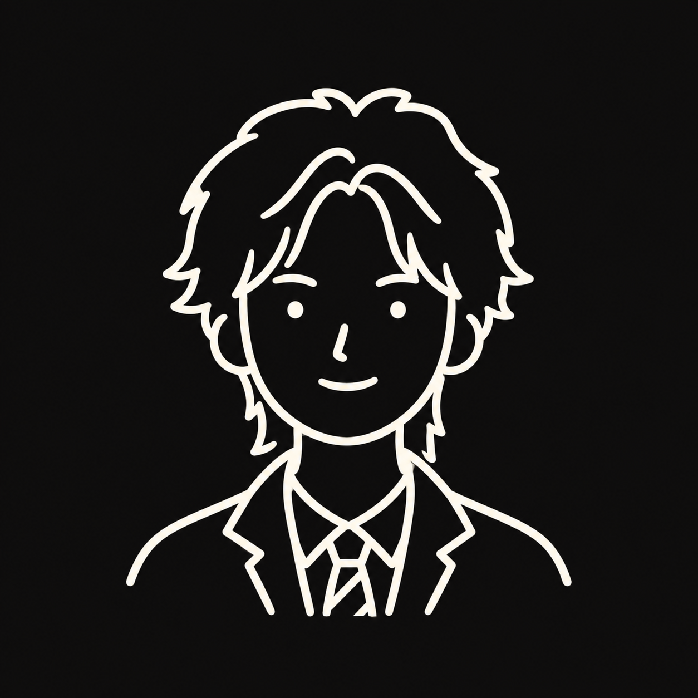
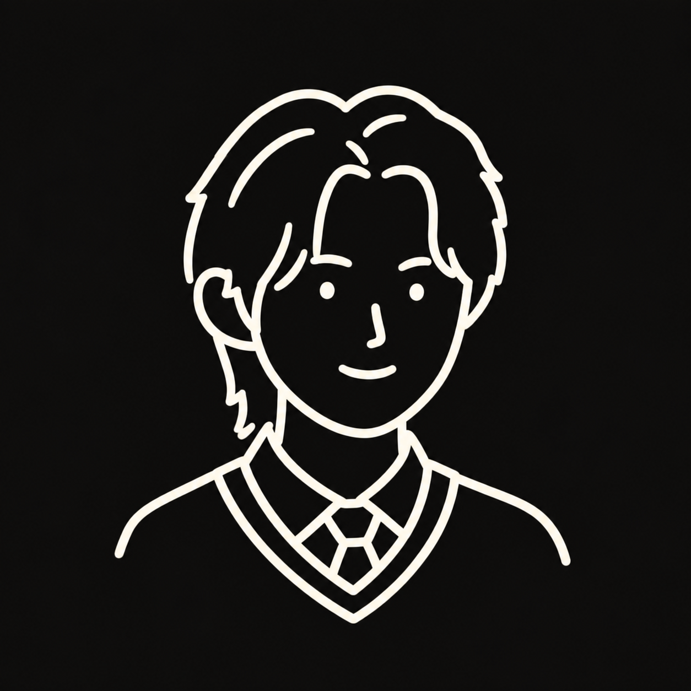
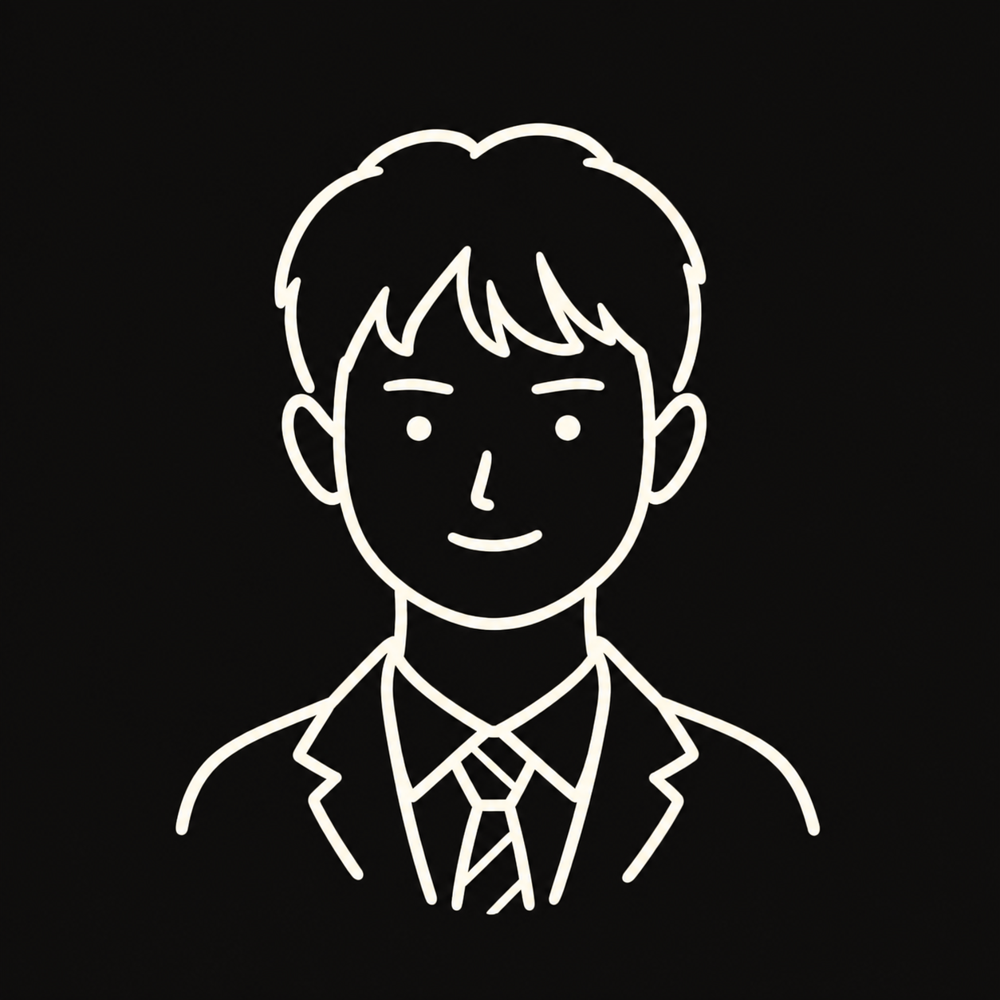

学术视野
聚焦具身智能交互与用户体验评估，构建人智协同策略体系；引入不确定性理论与机器学习算法，量化系统、环境与人的不确定性。依托与 UAL、佐治亚理工、金匠等国际顶尖院校的深度合作，始终站在全球学术前沿。
01 / MISSION
可触界面实验室（Touchable Interface Lab）致力于探索触觉多感官与多模态人机交互、智能产品界面与用户体验设计的交叉研究领域。我们秉持平等、包容、多元的核心价值，以人文关怀为底色，坚信技术发展的终极意义在于服务人的真实需求。
我们始终以人为中心，在推动技术创新的同时，不忘设计的人文本质——让每一次交互都更加自然、包容，让每一项技术都真正服务于人的福祉。
02 / FRAMEWORK
聚焦具身智能交互与用户体验评估，构建人智协同策略体系；引入不确定性理论与机器学习算法，量化系统、环境与人的不确定性。依托与 UAL、佐治亚理工、金匠等国际顶尖院校的深度合作，始终站在全球学术前沿。
打破学科壁垒，融合设计、机械、数学、计算机等多学科视角；运用人因智能与混合量化方法，结合精准质性研究，构建从用户研究、人因实验到数据建模、设计标准的完整闭环。
以平等、包容、多元为价值底色。在推动技术创新的同时，让每一次交互都更加自然、包容，让每一项技术都真正服务于人的福祉。
03 / PEOPLE
01 / FACULTY
教授 · 博士生导师
主要研究可触界面、触觉交互、智能产品设计与用户体验。现任湖南大学设计艺术学院副院长、可触界面实验室主任，曾在佐治亚理工学院创建设计未来实验室。
学院主页 ↗02 / FACULTY
副教授 · 硕士生导师
聚焦用户体验混合量化、设计质量与标准、设计价值演进及人智协同设计策略。博士毕业于清华大学，曾赴奥斯陆建筑与设计学院联合培养。
学院主页 ↗03 / FACULTY
副教授 · 硕士生导师
研究智能装备设计与优化、不确定性量化及人因工程，融合机械、数学与计算方法，探索结构优化、多物理场仿真与智能设计。
学院主页 ↗04 / FACULTY
助理教授 · 硕士生导师
聚焦触觉交互与用户体验、未来智能终端与智能硬件设计、增材制造安全设计。博士毕业于纽约大学，曾任职于 OPPO 研究院及 Apple 中国研发中心。
学院主页 ↗


